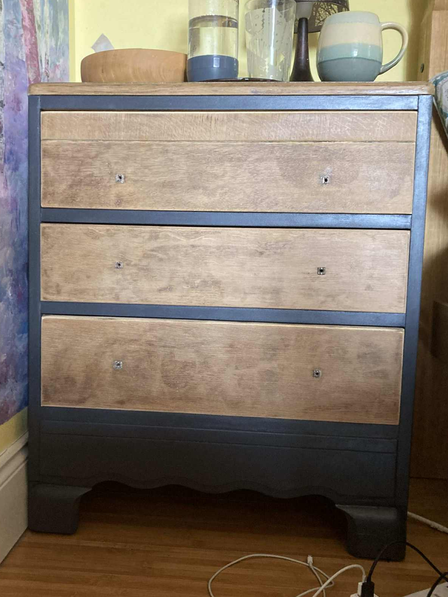

Started: August 2025
So finally finished my summer project - it can rain now, I don't mind anymore - and I have
a lovely new-looking chest of drawers, without the remains of stickers my 8-year old self added.
Note to Self: Paint stripper coverage varies quite a bit - don't go for the cheapest brand,
it's much less fierce.
Anyway, I haven't managed to find photos of what it looked like before, but imagine it being white, chipped, and holding the remains of decade-old (at least) primary school stickers. Yes, I did feel a little melancholic removing those stickers. So here are the 'in process' and 'after' photos:
